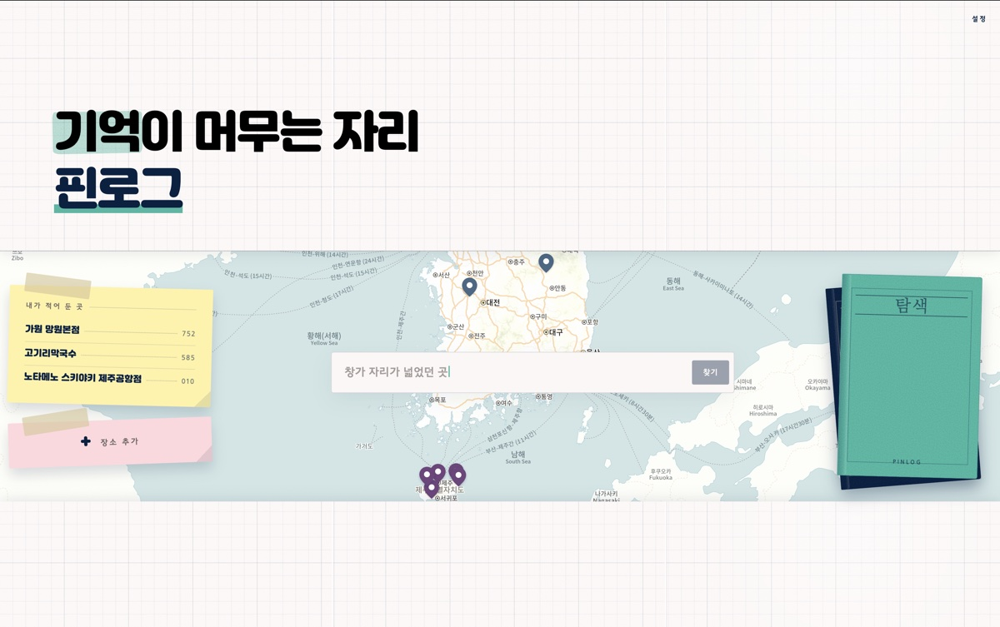
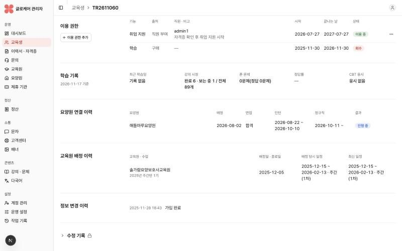
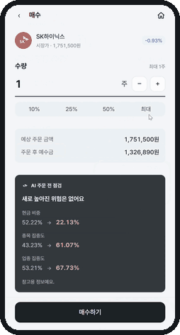

2026.11OO회사 · 프론트엔드 개발자 지원
IT PORTFOLIO
기준을 먼저 정하고,
바뀐 것은 숫자로 확인하는
프론트엔드 개발자
유승주
SSAFY 15기 · 프론트엔드




외국인 요양보호사의 교육부터 취업까지 돕는 서비스의 관리자 화면 리뉴얼
내 역할관리자 화면 기능 단위 풀스택 · 개발 서버 · CI
내 계좌와 성향을 읽고 투자 판단을 돕는 AI 비서가 있는 증권 서비스(모바일 웹)
내 역할프론트엔드 구현 전반
장소 이름이 기억나지 않아도 경험과 감정으로 다시 찾는 AI 장소 기록 서비스
내 역할프론트엔드 기능 구현
외국인 요양보호사의 교육부터 취업까지 돕는 서비스, 직원이 쓰는 관리자 화면을 새로 만든 리뉴얼
더미 데이터교육생 상세 진행 탭 — 진행 단계와 다음 할 일을 결제 · 배정 기록에서 계산해 보임

더미 데이터 BEFOREAFTER
BEFOREAFTER내 계좌와 성향을 읽고 투자 판단을 돕는 AI 비서가 있는 증권 서비스(모바일 웹)



백엔드는 AI 서버의 오류 코드와 상태를 그대로 넘겨 줌. AI 서버 내부 인증 오류(401)도 내려와, 상태 숫자만 보면 AI 분석을 누른 사용자가 멀쩡한 세션을 잃을 수 있었음
문제를 처음 짚은 것은 백엔드 · 기준은 인터셉터 구현 전에 정함 · 구현은 다른 프론트엔드 팀원
팀 계약은 화면이 구독 · 해제만 알게 하라고 정했지만, 계약과 코드를 대조하게 하니 시세 처리 세 곳이 조회 훅을 직접 불러 받는 방식이 바뀌면 화면까지 고쳐야 했음
대조 요청 · 티켓 결정은 직접, 구조 설계 · 구현은 AI 에이전트 안을 승인 · 웹소켓으로 실제 교체는 해 보지 못함
장소 이름이 기억나지 않아도 경험과 감정으로 다시 찾는 AI 장소 기록 서비스

자연어 검색 결과 — 내가 만든 화면 · 서비스는 2026.08 배포 종료